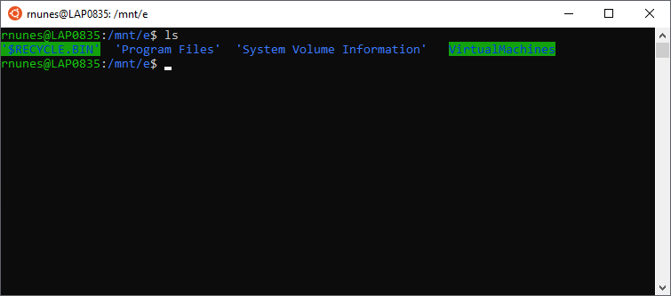

Linux as an OS was designed and created by Linus Torvalds in 1991. Widely used today, Linux and it's various subbranches are considered to be some of the most powerful and lightweight operating systems available. While it has changed considerably since it's inception, the command line prompt (terminal) is still one of the most important tools for this operating system.

If you needed to login to a Linux environment via Docker Container for example, you would use the "docker run [repositoryName:tagName] /bin/bash" command. There is more information about this and other Docker Commands in the Docker Servers tutorial.
Below are some of the most widely used and essential commands in Linux.
Print Working Directory is used to show you where you currently are.
Clears the current terminal window's contents.
Manual that provides help for the command.
List command used to show you where you currently are.
Current Directory command used to navigate to a specific directory or folder (case sensitive).
Variations
Navigates to one directory higher than the current working directory.
Navigates to root directory.
Navigates to home directory.
Copy command used to copy a file or folder.
Remove command used to remove a file.
Make Directory command used to create a new directory.
Remove Directory command used to remove a directory.
Remove Directory with the recursive flag enabled used to remove a directory and all of it's contents.